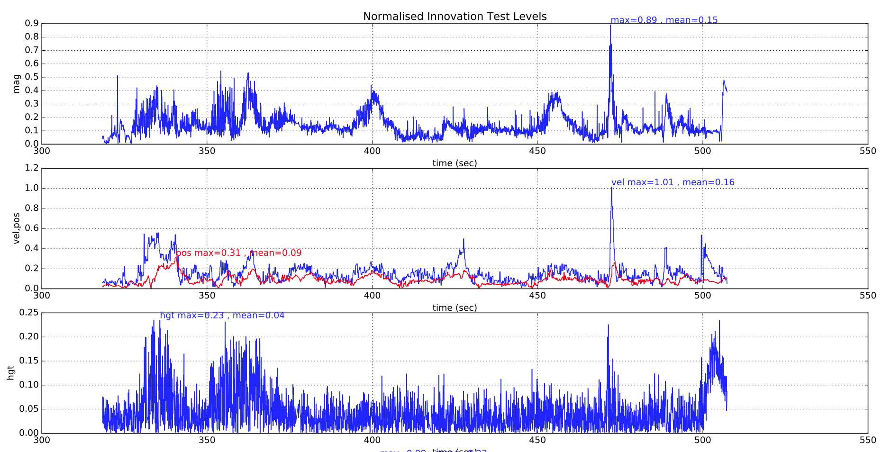
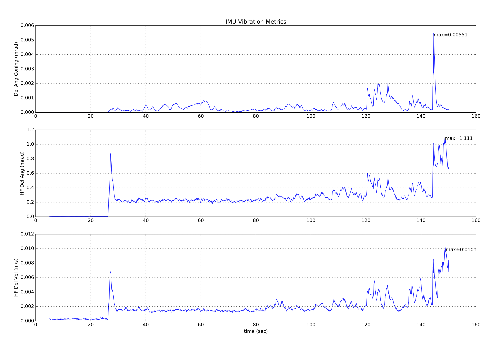
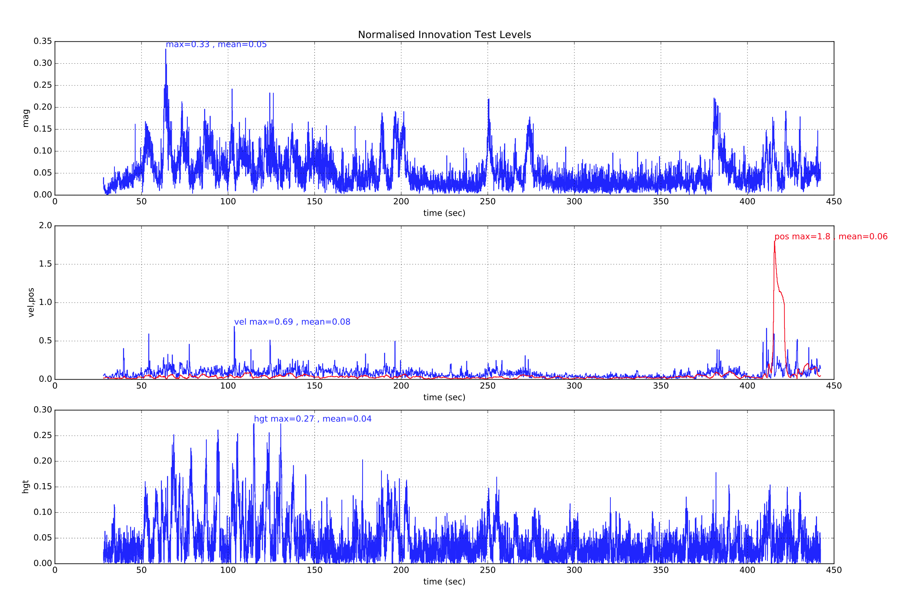
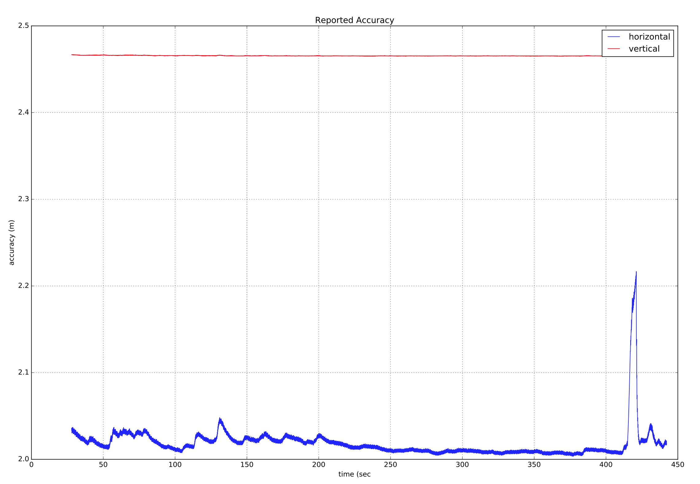
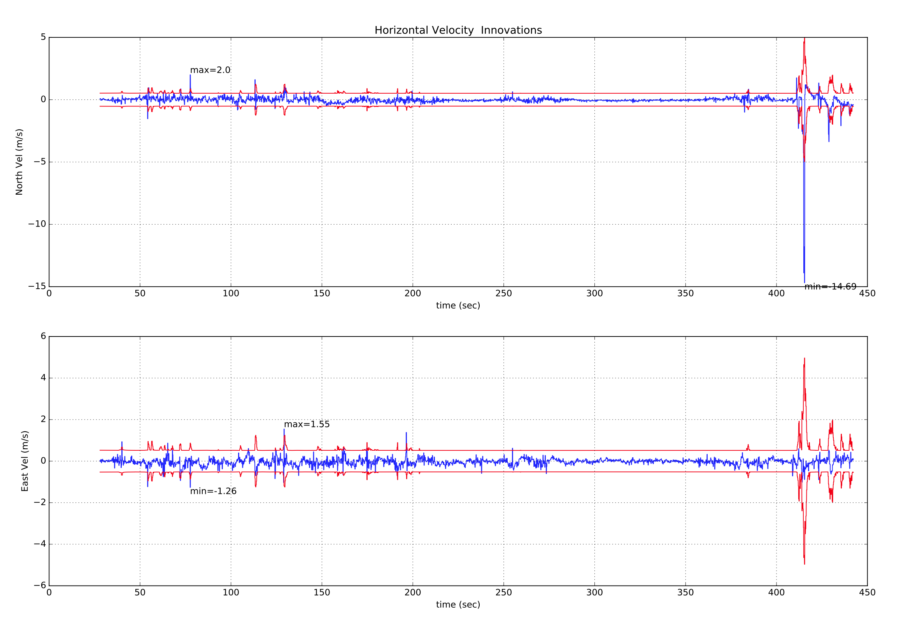

使用 ecl EKF
本教程旨在解答一些关于ECL EKF算法使用的常见问题。
什么是 ecl EKF?
ECL(Estimation and Control Library，估计与控制库）使用EKF(Extended Kalman Filter，扩展卡尔曼滤波器)算法来处理传感器测量信息并为下面的状态提供估计：
- 四元数，定义为从地球NED(北东地)坐标系到机体坐标系X,Y,Z的旋转四元数
- 速度，关于IMU - 北，东，地 (m/s)
- 位置，关于IMU - 北，东，地 (m)
- 角速度偏移估计，关于IMU - X,Y,Z (rad)
- 速度偏移估计，关于IMU - X,Y,Z (m/s)
- 地磁分量 - 北，东，地 (gauss)
- 磁偏量，关于飞行器本身 - X,Y,Z (gauss)
- 风速 - 北，东 (m/s)
EKF在一个延迟的fusion time horizon上运行，以允许传感器在每次测量时相对于IMU存在不同的时间延迟。 每个传感器的数据都是FIFO缓存的并由EKF从缓存中检索，得以在正确的时候使用。每个传感器的延迟补偿由参数EKF2_*_DELAY控制。
互补滤波器用于利用缓存好的IMU数据将状态从fusion time horizon向前传播到当前时间。该滤波器的时间常数由参数EKF2_TAU_VEL和EKF2_TAU_POS控制。
fusion time horizon延迟和缓冲区的长度由参数EKF2_*_DELAY的最大值确定。如果未使用某传感器，建议将其时间延迟设置为零。降低fusion time horizon延迟会减少互补滤波器中用于将状态向前传播到当前时间的误差
调整位置和速度状态以消除IMU和机体坐标系之间由于安装误差所产生的偏移，避免其输出到控制回路。 IMU相对于机体坐标系的位置由参数EKF2_IMU_POS_X，Y，Z设置。
EKF仅使用IMU的数据进行状态预测。IMU的数据不会用作EKF推导过程中的量测值。协方差预测、状态更新以及协方差更新的代数方程都是使用Matlab符号工具箱导出的，可以在这里找到：Matlab Symbolic Derivation
ecl EKF使用何种传感器测量值？
根据传感器测量值的不同组合，EKF具有不同的操作模式。在启动时，滤波器会检查传感器的最小可行组合，并在初始倾斜、偏航以及高度对准完成后进入一个提供旋转、垂直速度、垂直位置、IMU角增量误差和IMU速度增量误差估计的模式。
此模式需要有传感器的数据，例如偏航数据源（由磁力计或者外部视觉设备提供）和高度数据源。所有的EKF操作模式都需要这个最小的数据集。然后可以使用其他传感器数据来估计附加的状态。
惯性测量单元（IMU）
- 惯性测量单元的三轴位置固定，用于采集单位角增量和速度增量数据，最低采样频率为100Hz。
注意：在EKF使用IMU角增量数据之前应对其进行校正修正。
磁力计
三轴磁力计（或者是外部视觉系统）的最低采样率为5Hz。磁力计数据可以以两种方式使用：
- 使用倾斜估计和磁偏角将磁力计测量值转换为偏航角。该偏航角被用作EKF的观测量。这种方法不太准确并且没有考虑机体坐标系的磁场偏移，然而其对于磁异常和大的陀螺仪初始偏移更加鲁棒。它是飞行器刚启动还停留在地面上时使用的默认方法。
- 磁力计的XYZ三轴读数用作单独测观测值。这种方法更准确，并且允许机体坐标系的偏移。但假定地磁场环境只是缓慢变化，这种方法在存在巨大的外部磁异常时性能较差。这是当飞行器在空中并爬升超过1.5米高度时的默认方法。
用于选择模式的逻辑由EKF2_MAG_TYPE参数设置。
高度
高度的数据源——GPS，气压，测距仪或外部视觉（最低采样频率5Hz）。注意：高度数据的主要来源由EKF2_HGT_MODE参数控制。
如果这些测量不存在，EKF将不会启动。当检测到这些测量时，EKF将初始化状态并完成倾斜和偏航对准。当倾斜和偏航对准完成时，EKF可以转换到其他的操作模式，使得能够使用附加的传感器数据：
GPS
如果满足以下条件，则GPS测量将用于位置和速度：
- 通过设置EKF2_AID_MASK参数使能GPS的使用
- GPS通过质量检查。这些检查由EKF2_GPS_CHECK和 EKF2_REQ<>参数控制
- 通过EKF2_HGT_MODE参数的设置，EKF可以直接使用GPS高度。
测距仪
测距仪到地面的距离由单个状态滤波器使用，用于估计地形相对于高度基准的垂直位置。
如果在可用作零高度基准的平坦表面上操作，测距仪数据也可以直接由EKF使用，以通过将EKF2_HGT_MODE参数设置为2来估计高度。
空速
通过将EKF2_ARSP_THR设置为正值，等效空速（EAS）数据可用于估计风速并减少GPS丢失时的漂移。 当超过由EKF2_ARSP_THR设置的阈值并且飞行器不是旋翼时，将使用空速数据。
Synthetic Sideslip
固定翼平台可以利用假设的边缘观测零点来改进风速估计，并且还能够在没有空速传感器的情况下实现风速估计。可以通过将EKF2_FUSE_BETA参数设置为1来启用此项。
光流
如果满足以下条件，将使用光流数据：
- 有效的测距仪数据可用。
- EKF2_AID_MASK参数中第1位为真。
- 光流传感器返回的质量度量大于由EKF2_OF_QMIN参数设置的最小要求
外部视觉系统
位置和姿态可以使用外部视觉系统（例如Vicon）进行测量：
- 如果EKF2_AID_MASK参数中的第3位为真，则将使用外部视觉系统水平位置数据。
- 如果EKF2_HGT_MODE参数设置为3，则将使用外部视觉系统垂直位置数据。
- 如果EKF2_AID_MASK参数中的第4位为真，则外部视觉系统的姿态数据将用于偏航估计。
如何使用ecl EKF?
将SYS_MC_EST_GROUP参数设置为2可使用ecl EKF.
相比其他估计器ecl EKF有什么优缺点?
与所有估计器一样，大多数性能需要进行调参以匹配传感器特性。调参是在精度和鲁棒性之间的折衷，尽管我们试图提供满足大多数用户需求的参数，但是仍将存在需要进行参数调节的应用。
出于这个原因，相对于attitude_estimator_q + local_position_estimator的传统估计器组合，ecl EKF没有精度方面的要求(claim)，估计器的最优选取将取决于应用以及参数调节。
缺点
- ecl EKF是一个复杂的算法，需要很好地了解扩展卡尔曼滤波理论及其在导航问题中的应用才能更好的进行参数调节。因此，对于没有获得良好效果地用户来说，知道要改变什么则更为困难。
- ecl EKF使用更多的RAM和闪存空间
- ecl EKF使用更多的日志空间
- ecl EKF具有较少的飞行时间
优点
- ecl EKF能够以数学上一致的方式融合来自具有不同时间延迟和采样频率的传感器的数据，在正确地设置了时间延迟参数的情况下，该算法将提高动态操纵精度。
- ecl EKF能够融合大范围的不同传感器类型。
- ecl EKF检测并报告传感器数据统计中显著的不一致情况，可协助诊断传感器错误。
- 对于固定翼操作，无论是否使用空速传感器，ecl EKF都能够用于估计风速，并且能够使用估计的风速结合空速测量以及侧滑假设来延长可用的航位推算时间(如果在飞行中丢失GPS信号)。
- ecl EKF估计3轴加速度计偏差，这提高了立式起落飞行器(tailsitters)和其他飞行器在飞行阶段经历大的姿态变化时的精度。
- The federated architecture (combined attitude and position/velocity estimation) means that attitude estimation benefits from all sensor measurements. This should provide the potential for improved attitude estimation if tuned correctly.
- 联合架构（将姿态和位置/速度估计结合起来）意味着姿态估计会受益于所有传感器测量。 如果适当调节，这将提供改进姿态估计的潜力。
我需要如何检查EKF的执行效果？
在飞行过程中，EKF 的输出（outputs）, 状态（states） 以及状态数据（status data）会发布到许多uORB话题（Topic）中，这些话题会存储到SD卡中。 下面的介绍假设数据已经以.ulog文件的形式被记录，为了使用.ulog格式，需要将 SYS_LOGGER 参数置1。
.ulog格式文件可以在python中使用PX4 pyulog library来进行分析。
大部分 EKF 数据都在.ulog文件中的 ekf2_innovations和 estimator_status 这两个uORB消息里面。
Output Data（输出数据）
- 姿态输出数据在 vehicle_attitude 消息中。
- 本地位置输出在 vehicle_local_position 消息中。
- 全局 (WGS-84) 输出数据在 vehicle_global_position 消息中。
- 风速输出数据在 wind_estimate mess消息中。
States（状态）
查看estimator_status中的states[32]。状态的索引如下：
- [0 ... 3] 四元数
- [4 ... 6] 速度 NED (m/s)
- [7 ... 9] 位置 NED (m)
- [10 ... 12] IMU 角度增量偏差 XYZ (rad)
- [13 ... 15] IMU 速度增量偏差 XYZ (m/s)
- [16 ... 18] 地球磁场 NED (gauss)
- [19 ... 21] 机体磁场 XYZ (gauss)
- [22 ... 23] 风速 NE (m/s)
- [24 ... 32] 未使用
State Variances（状态方差）
参考 estimator_status 中的covariances[28]（协方差）。 covariances[28]的索引图如下:
- [0 ... 3] 四元数
- [4 ... 6] 速度 NED (m/s)^2
- [7 ... 9] 位置 NED (m^2)
- [10 ... 12] IMU 角度增量偏差 XYZ (rad^2)
- [13 ... 15] IMU 速度增量偏差 XYZ (m/s)^2
- [16 ... 18] 地球磁场 NED (gauss^2)
- [19 ... 21] 机体磁场 XYZ (gauss^2)
- [22 ... 23] 风速 NE (m/s)^2
- [24 ... 28] 未使用
观测新息（Observation Innovations）
- 磁力计 XYZ (gauss) : 参考 mag_innov[3] ，位于 ekf2_innovations。
- 偏航角 (rad) : 参考 heading_innov ，位于 ekf2_innovations.
- 速度和位置新息 : 参考 vel_pos_innov[6] ，位于 ekf2_innovations。vel_pos_innov[6] 的索引图如下:
- [0 ... 2] 速度 NED (m/s)
- [3 ... 5] 位置 NED (m)
- 真实风速 (m/s) : 参考 airspeed_innov ，位于 ekf2_innovations。
- 合成侧滑 (rad) : 参考 beta_innov in ekf2_innovations。
- 光流 XY (rad/sec) : 参考 flow_innov in ekf2_innovations。
- 地面上方高度 (m) : 参考 hagl_innov in ekf2_innovations。
观测信息方差
- 磁力计 XYZ (gauss^2) : 参考 mag_innov_var[3] ，位于 ekf2_innovations。
- 偏航角 (rad^2) : 参考 heading_innov_var，位于the ekf2_innovations message.
- 速度和位置新息 : 参考 vel_pos_innov_var[6]，位于ekf2_innovations。 vel_pos_innov[6] 的索引图如下:
- [0 ... 2] 速度 NED (m/s)^2
- [3 ... 5] 位置 NED (m^2)
- 真实风速 (m/s)^2 : 参考 airspeed_innov_var ，位于 ekf2_innovations。
- 合成侧滑 (rad^2) : 参考 beta_innov_var ，位于 ekf2_innovations。
- 光流 XY (rad/sec)^2 : 参考 flow_innov_var ，位于 ekf2_innovations。
- 地面上方高度 (m^2) : 参考 hagl_innov_var ，位于 ekf2_innovations。
Output Complementary Filter（输出互补滤波器）
输出互补滤波用于将状态从融合时间范围推进到当前时间。要查看融合时间范围内测量的角度、速度和位置追踪误差量级（magnitude），参考 ekf2_innovations 中的 output_tracking_error[3]索引图如下：
- [0] 角度追踪误差量级 (rad)
- [1] 速度追踪误差量级 (m/s)。 可以通过调整参数 EKF2_TAU_VEL来调整速度追踪时间常数。降低这个参数会降低稳态误差，但是会增加NED速度输出的观测噪声数量。
- [2] 位置追踪误差量级 (m)。 可以通过调整参数 EKF2_TAU_POS来调整位置追踪时间常数。降低这个参数会降低稳态误差，但是会增加NED位置输出的观测噪声数量。
EKF 误差
EKF对于恶劣状态下的状态和协方差更新内置了误差检测。 参考 filter_fault_flags ，位于 estimator_status。
观测误差
有两种类型的观测错误:
- 数据丢失。一个例子就是测距仪不能提供返回值。
- 新息，就是状态估计和传感器观测之间的差异超出了。一个例子就是过多的震动导致大的垂直位置误差，导致气压高度测量值被拒绝。
这些都会导致观测数据被拒绝足够长时间而导致EKF尝试使用传感器观测值重置状态。所有的观测都有一个统计置信度检测应用于新息。检测的标准差的数目受到每种观测类型的参数 EKF2_<>_GATE 的控制。
测试水平（Test levels）在 estimator_status 中，如下所示:
- mag_test_ratio : 最大磁力计新息分量与新息测试限制之比
- vel_test_ratio : 最大速度新息分量与新息测试限制之比
- pos_test_ratio : 最大水平位置新息分量与新息测试限制之比
- hgt_test_ratio : 最大垂直位置新息分量与新息测试限制之比
- tas_test_ratio : 最大真实风速新息分量与新息测试限制之比
- hagl_test_ratio : 最大地面上方高度新息分量与新息测试限制之比
对于每个传感器的二进制 pass/fail 汇总, 参考 innovation_check_flags ，位于 estimator_status。
GPS 质量检测
开始GPS辅助之前，EKF进行了一系列的GPS质量检测。这些检测由参数 EKF2_GPS_CHECK 和 EKF2_REQ<>控制。这些检测的 pass/fail 状态记录在 estimator_status.gps_check_fail_flags 消息中。当所有要求的GPS检测通过，这个整数将为0。如果EKF没有开始GPS校准，查看 estimator_status 中的 gps_check_fail_flags 位掩码的定义。
EKF 数值误差
为了降低对处理器的要求，对所有的运算EKF使用单精度浮点类型，对协方差预测和更新方程使用一阶近似。这意味着当重新调试EKF时有可能遇到异常情况，在其中协方差矩阵操作条件变得很恶劣以至于导致状态估计中产生发散或者明显的误差。
为了阻止这个，每一个协方差和状态更新步骤包含以下误差检测和修正步骤：
- 如果新息方差小于观测方差（这要求一个负的状态方差，这是不可能的）或者协方差更新将对任何状态产生负的方差：
- 状态和协方差更新被跳过
- 协方差矩阵中相应的行和列被重置
- 失败被记录在 estimator_status filter_fault_flags 消息中
- 状态方差 (协方差矩阵中的对角线) 被限制成非负值
- 上限被应用到状态方差中去
- 协方差矩阵强制对称
重新调试滤波器后，像降低噪声变量、estimator_status.gps_check_fail_flags 的数值这样的部分重新调试应该再次检测以确保仍然为零。
如果高度估计发散该怎么办？
EKF高度在飞行中远离GPS和高度计测量值，最常见原因是震动导致的IMU限幅（clipping）和/或混淆（aliasing）。如果种种情况出现，以下迹象在数据中应该很明显：
- ekf2_innovations.vel_pos_innov[3] and ekf2_innovations.vel_pos_innov[5] 都将有同样的迹象。
- estimator_status.hgt_test_ratio 将大于1.0
推荐第一步使用一个有效的隔离安装系统确保飞控与机架隔离。一个隔离底座具有6个自由度，因此有6个共振频率。作为通用规则，安装在隔离底座上的飞控的的6个共振频率应该大于25Hz以避免与飞控动力学的交叉，并且低于点击的频率。
如果共振频率与点击或螺旋桨的转动频率重合，隔离底座只会使得振动情况更加恶劣。
通过进行以下参数修改，EKF可以变得对于震动引起的高度发散更加具有抵抗力：
- 加倍主要高度传感器的新息阈值。如果使用的是气压计高度对应的就是EK2_EKF2_BARO_GATE。
- 开始时提高EKF2_ACC_NOISE的数值到0.5。如果发散还是会出现，每次增加0.1，但是不要超过1.0。
注意这些改变会使得EKF对于GPS垂直速度和气压更加敏感。
如果位置估计发散该怎么办？
位置发散最常见的原因如下：
高振动水平。
- 通过提升飞控的机械隔离水平。
- 提高 EKF2_ACC_NOISE 和 EKF2_GYR_NOISE 的数值会有效，但是会使得EKF更易受小故障的干扰。
大的陀螺仪偏差的偏移。
- 通过重新校准陀螺仪来修正。检查过量的温度灵敏性（在从冷启动逐渐加热的过程中存在> 3 deg/sec的偏差变化），并且如果收到影响就替换传感器以降低随着温度变化的变化速率。
糟糕的偏航校准
- 检查磁力计的校正和对齐。
- 检查QGC中显示朝向与真实朝向偏差在15度以内。
质量很差的GPS精度
- 检查干扰
- 提升隔离和屏蔽
- 检查飞行位置是否有GPS信号阻碍或者反射（接近高楼大厦）
- GPS信号丢失
确定哪一个是主要因需需要系统的方法来分析EKF日志数据:
画出速度新息测试比曲线 - estimator_status.vel_test_ratio
画出水平位置新息比曲线 - estimator_status。pos_test_ratio
画出高度新息比曲线 - estimator_status.hgt_test_ratio
画出磁力计新息比曲线 - estimator_status.mag_test_ratio
画出GPS报告的速度精度曲线 - vehicle_gps_position.s_variance_m_s
画出IMU角度增量状态估计曲线 - estimator_status.states[10], states[11] and states[12]
画出EKF内置的高频振动度量：
- 角度增量锥进振动 - estimator_status.vibe[0]
- 高频角度增量振动 - estimator_status.vibe[1]
- 高频速度增量振动 - estimator_status.vibe[2]
常规操作期间，搜所有的测试比例应该保持在0.5以下，只是偶尔会出现尖峰，如下面一次顺利的飞行中的例子所示：

下图显示了一台减震良好的多轴飞行器的EKF振动度量。可以看到起飞和降落过程中的着陆冲击和升高的振动。要提供关于最大阈值的相关建议，这些数据还不足够。

以上振动度量价值有限，因为振动出现在了IMU采样频率（对于大多数飞控板而言是1 kHz）附近，这将导致高频振动度量中不会出现的偏移出现在数据之中。唯一的探测混淆误差的方式是在观察到它们影响惯性导航系统精度和导致新息水平提升。
除了产生> 1.0的位置和速度测试比，不同的误差机理也会以不同的方式影响其他测试比：
确定超量振动
高振动水平通常影响垂直位置和速度新息还有水平分量。磁力计测试水平只受到很小程度的影响。
(此处需要插入显示恶劣振动的示意图/insert example plots showing bad vibration here)
确定过量的陀螺仪偏差
大的陀螺仪偏差偏移量通常特征是飞行中角度增量偏差的数值大于5E-4（相当于~3 deg/sec），如果偏航轴受到影响也会导致磁力计测试比的大大提高。除非是极端情形，高度通常不会受到影响。如果滤波器在飞行前有时间收敛，把偏差值提高至5 deg/sec也是可以承受的。如果位置发散，commander进行的飞行前检查应当阻止解锁。
(此处需要插入显示恶劣陀螺仪偏差的示意图/insert example plots showing bad gyro bias here)
确定糟糕的偏航精度
当飞行器开始在惯导系统和GPS测量值计算出来的速度方向内不连续的移动时，恶劣的偏航校准导致速度测试比迅速增加。磁力计新息受到轻微影响。高度通常不受影响。
(此处需要插入显示恶劣的偏航校准的示意图/insert example plots showing bad yaw alignment here)
确定糟糕的GPS精度
糟糕的GPS精度通常伴随着GPS接收器的报告速度误差的上升，连同新息的上升。多路径、遮蔽、干扰导致的瞬态误差是更常见的原因。这里有一个GPS精度突然丢失的示例，此时多旋翼开始漂移远离悬停位置且必须使用摇杆进行修正。 estimator_status.vel_test_ratio 上升到大于1暗示GPS速度与其他测量量不连续并已经被拒绝。

这里伴随着GPS接收器报告速度精度的增加，这暗示着可能是一个GPS错误。

如果我们也看看GPS水平速度新息和新息方差，就能看到伴随着GPS '失灵（glitch）' 事件，大的尖峰出现在北向速度新息。

确定GPS数据丢失
GPS数据丢失将被速度和位置新息测试比'一蹶不振（flat-lining）'地显示出来。如果这个出现，检查 vehicle_gps_position 中的其他GPS状态数据找到更深入的信息。
(此处插入显示GPS数据丢失的示例图/insert example plots showing loss of GPS data here)